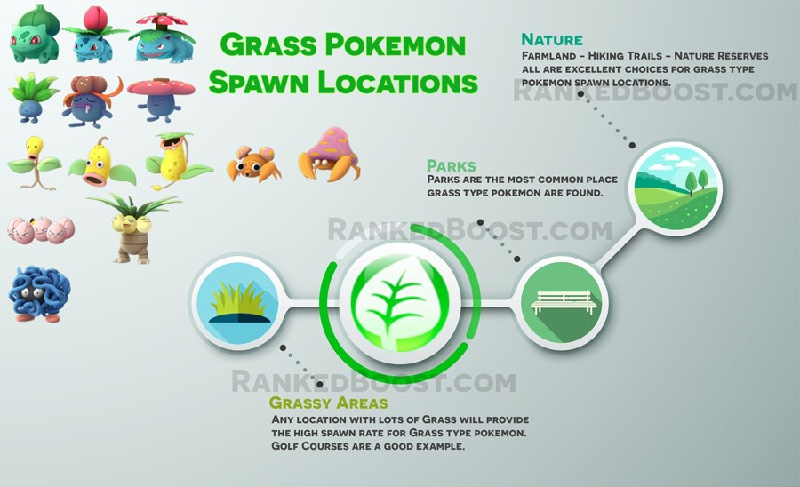

Where Do I Catch Grass Pokemon In Pokemon Go: Grass Pokemon are very easy since they can be found in a lot of common locations, such as parks and golf courses. Some not so common areas, Pokemon Go players living in the city will find it difficult to access some of these areas.
How To Get Grass Type Pokemon Tips:
Where Do I Find Grass Pokemon? – ( Grass Pokemon Location )
Confirmed Grass Pokemon Go Spawn Locations: Parks – Farmland – Forest – Hiking Trails – Gardens – Golf Courses – Woodland – Grassy Areas – Meadow – Nature Reserve
Unconfirmed Grass Pokemon Go Spawn Locations:
There is a Total of 14 Pokemon Go Grass Pokemon: Bulbasaur, Ivysaur, Venusaur, Oddish, Gloom, Vileplume, Bellsprout, Weepinbell, Victreebell, Exeggcute, Exeggutor, Tangela, Paras and Parasect.
